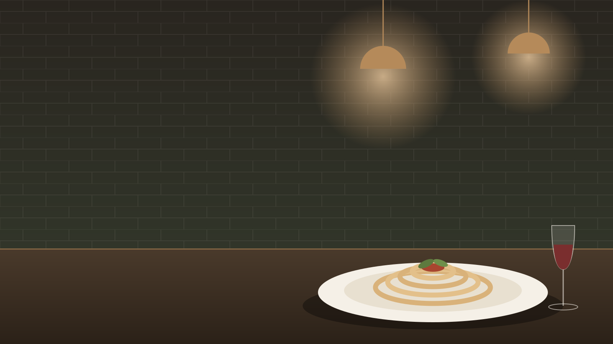
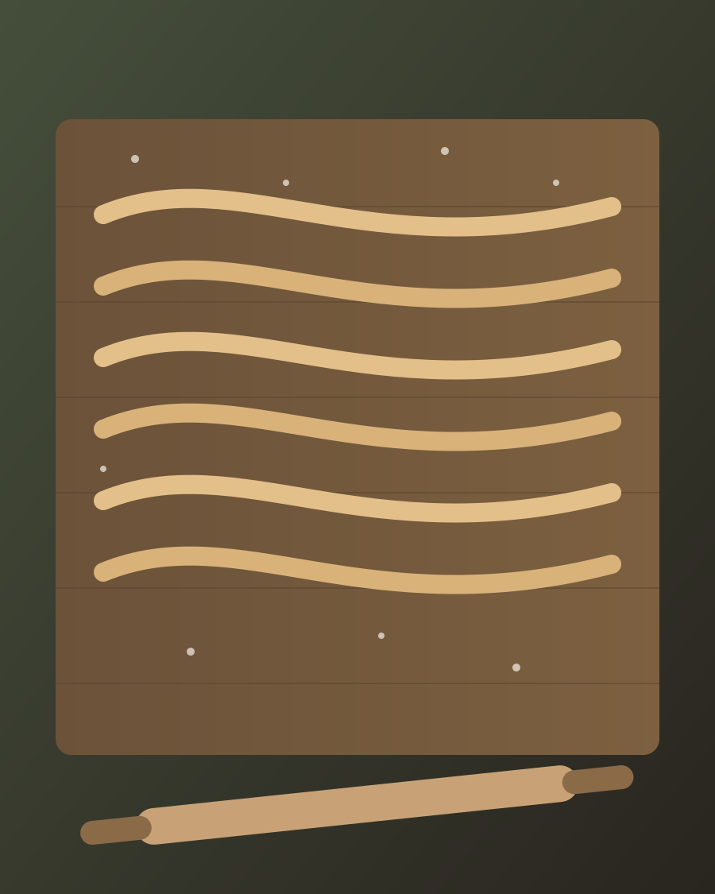
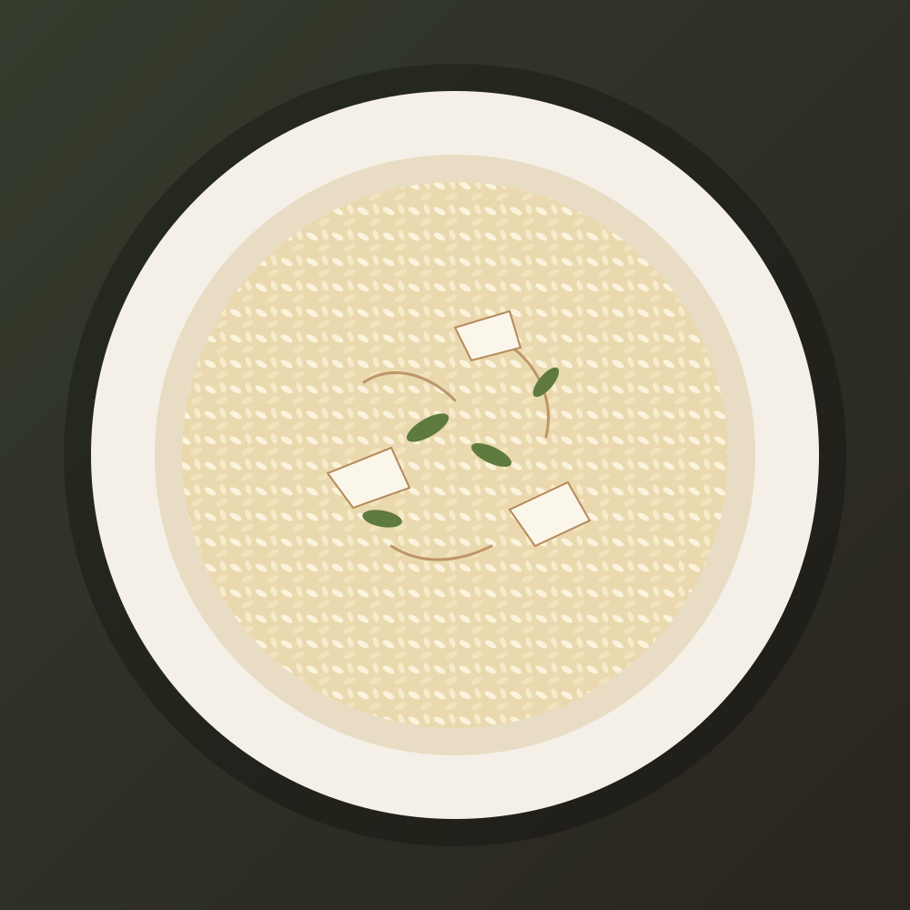

Massa feita todos os dias
Produção artesanal no próprio espaço, com ingredientes orgânicos, segundo fontes públicas.

Ilustração conceitual · não é foto do restauranteCozinha italiana · 4º Distrito · Porto Alegre, RS
Uma casa da década de 1940 no São Geraldo, cozinha aberta e massas feitas todos os dias. Esta demonstração mostra como o restaurante poderia ter uma presença digital própria, elegante e pronta para receber reservas.
A cozinha italiana
O Aora Cucina funciona em uma casa da década de 1940, no bairro São Geraldo, em Porto Alegre. Segundo matérias e guias públicos, as massas são produzidas artesanalmente todos os dias, no próprio espaço, com ingredientes orgânicos, e a cozinha aberta deixa a produção à vista de quem está à mesa.
A massa fresca é parte central da linguagem italiana à mesa. Feita com farinha e ovos, ou com semolina e água, ganha textura e sabor próprios e pede molhos que a acompanhem sem esconder. O risoto segue a mesma lógica: arroz, caldo e tempo, até o ponto cremoso.
Fontes: QuintoAndar, Wanderlog e Porto Alegre Film Commission. Informações descritivas a validar com o restaurante.

Ilustração conceitual
Produção artesanal no próprio espaço, com ingredientes orgânicos, segundo fontes públicas.
No andar de baixo, o preparo dos pratos acontece à vista de quem está no salão.
Um casarão da década de 1940 no 4º Distrito, com tijolos aparentes e mezanino.
Cardápio
Pratos citados em fontes públicas sobre o restaurante, para demonstrar a navegação. O cardápio oficial, a disponibilidade e os valores devem ser confirmados com o Aora Cucina.
Ambiente
Ilustrações conceituais inspiradas em características descritas em fontes públicas: tijolos aparentes, cozinha aberta, mezanino e área externa. Não são fotos do restaurante. Clique para ampliar; use as setas do teclado para navegar e Esc para fechar.
Reservas
O restaurante recebe reservas por mensagem de texto no WhatsApp. Preencha o formulário para montar a mensagem, ou abra a conversa diretamente.
Localização e contato
Informações coletadas em fontes públicas. Confirme horários e canais com o restaurante.